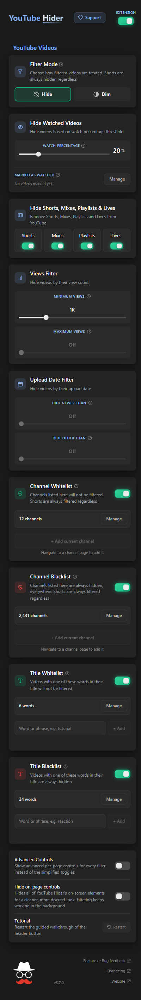
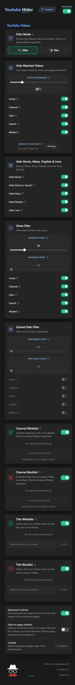
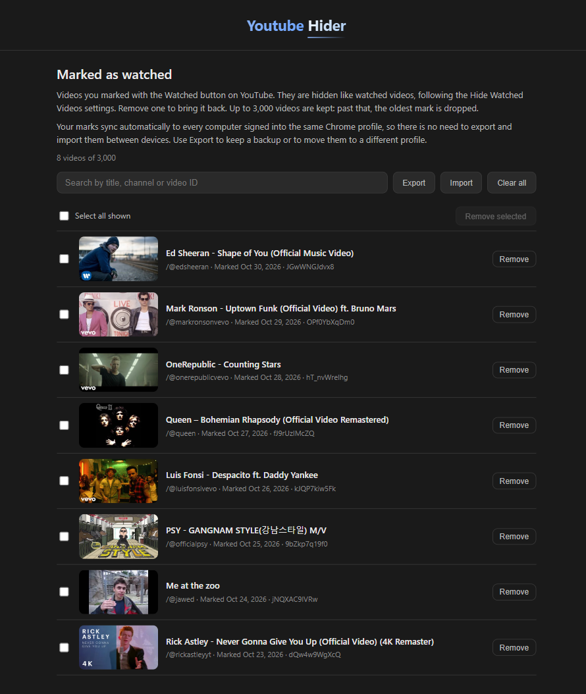

Hide Watched Videos
Set your watch threshold and enjoy fresh content only. Never see the same video twice. YouTube missed one? Hover it and click Watched to hide it too, and manage every marked video from one page.
Hide watched and low views videos, banish Shorts, Mixes, Playlists, Lives and declutter your feed
Watch how YouTube Hider transforms your viewing experience


Set your watch threshold and enjoy fresh content only. Never see the same video twice. YouTube missed one? Hover it and click Watched to hide it too, and manage every marked video from one page.
Eliminate distracting Shorts, Mix playlists, Playlists and live streams everywhere on YouTube.
Hide videos below a minimum view count, above a maximum one, or both together to keep only a popularity range. Quality over quantity.
Hide videos that are too new or too old. Set two independent thresholds to keep only content from a specific time window, with multi-language date parsing.
Choose whether filtered videos disappear completely or stay visible with a dark overlay showing why they were filtered. Dim mode keeps elements clickable.
Exempt your favorite channels from every filter. Add them straight from the filtered overlay, the Subscribe button, or the popup, with an undo window so a stray click never sticks. Or whitelist a word, and every video with it in its title is never filtered.
The opposite of Whitelist: always hide a channel's videos everywhere, including Shorts, Mixes, Playlists and Lives. Add it from the Subscribe button, a hover button on any video card, filtered or not, or the popup, with the same undo window as Whitelist. Or blacklist a word, and every video with it in its title is always hidden, even from a whitelisted channel.
Instantly pause every filter with one switch in the popup header, without losing any of your settings.
YouTube sometimes forgets the progress bar on a video you already saw, and it knows nothing about the ones you watched on another account. Mark them yourself, and they go away like any other watched video.
A Watched button appears next to Blacklist at the top of any video thumbnail. The video is hidden or dimmed following your Hide Watched Videos settings, on the same pages.
A 3 second Undo catches a stray click before it counts. In Dim mode, the overlay of a marked video carries an Unmark button that brings it back right away.
Manage, in the Hide Watched Videos card, opens every marked video newest first. Search by title, channel or ID, remove one or several with Undo, and export or import the list as a file.
Marks follow you to every computer signed into the same Chrome profile. Up to 3,000 videos are kept, and the page warns you well before the oldest ones start to drop.

Because laziness deserves optimization
Join thousands of users who have already simplified their streaming experience